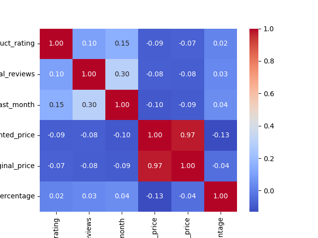
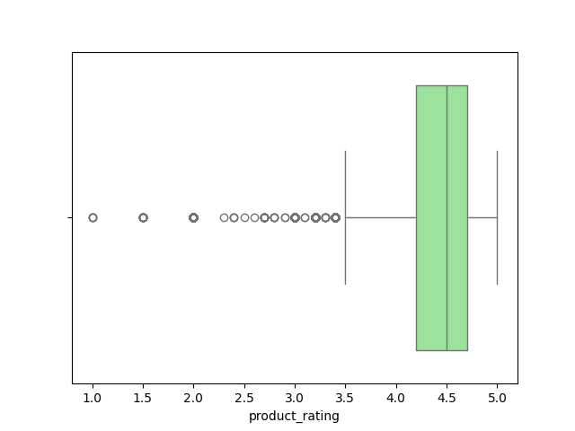
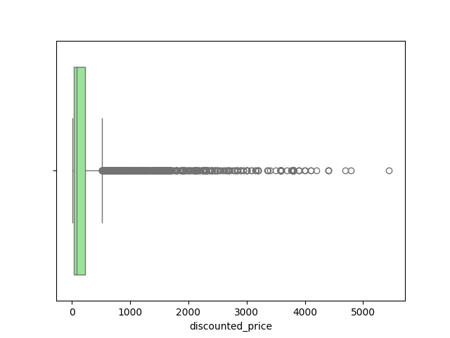
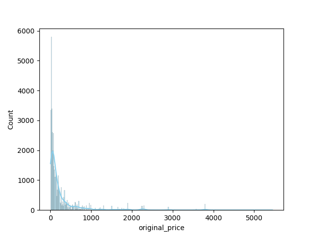
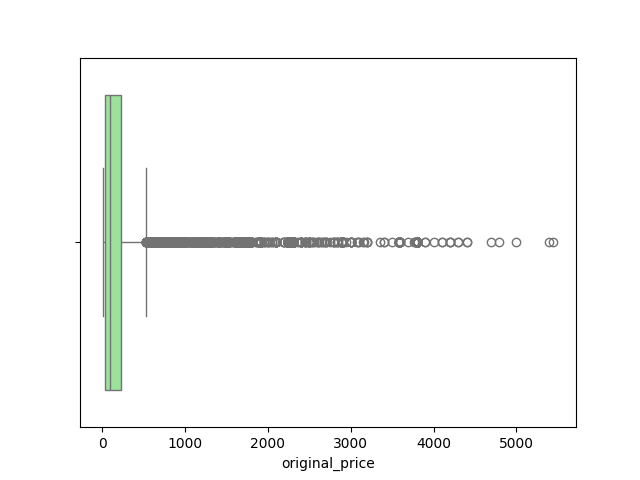

Descrição estatística:
| product_title | product_rating | total_reviews | purchased_last_month | discounted_price | original_price | is_best_seller | is_sponsored | has_coupon | buy_box_availability | delivery_date | sustainability_tags | product_image_url | product_page_url | data_collected_at | product_category | discount_percentage | |
|---|---|---|---|---|---|---|---|---|---|---|---|---|---|---|---|---|---|
| count | 42675 | 41651.000000 | 41651.000000 | 32164.000000 | 40613.000000 | 40613.000000 | 42675 | 42675 | 42675 | 28022 | 30692 | 3408 | 42675 | 40606 | 42675 | 42675 | 40613.000000 |
| unique | 8808 | NaN | NaN | NaN | NaN | NaN | 12 | 2 | 42 | 1 | 24 | 16 | 8038 | 40606 | 1559 | 15 | NaN |
| top | Duracell Coppertop 9V Battery, 6 Count (Pack of 1), 9 Volt Battery with Long-lasting Power, All-Purpose Alkaline 9V Battery for Household and Office Devices | NaN | NaN | NaN | NaN | NaN | No Badge | Organic | No Coupon | Add to cart | 2025-09-04 | Small Business | https://m.media-amazon.com/images/I/51Xr76m2WLL._AC_UL320_.jpg | https://www.amazon.com/sspa/click?ie=UTF8&spc=MTo4NzEzNDY2NTQ5NDYxNDQ2OjE3NTU4MDAwNjg6c3BfYXRmX2Jyb3dzZTozMDA2NzE0NTMwMTcyMDI6OjA6Og&url=%2FBOYA-BOYALINK-Microphone-Micophone-Cancelling%2Fdp%2FB0DNZB7TQG%2Fref%3Dsr_1_1_sspa%3Fdib%3DeyJ2IjoiMSJ9.avmZlHCQuVOwikquBqYSIjN8SVcyxtkXHQMPt7Zjzkf4TeZzrZfQETMhdWuWgtTrVz8ITKpXLHvZj0fZRjxqgMPYNMitRqeUoeIwdYfc5nnzJ8m0T8HYeedlh3YSOhJQjeHskevMUQWyg6TtoB2tHcHt-edYPsQ6VwFQTI6avsPrgVpFKrto3ff9TDR9BcRyPwM6AiYn-vh7wA5PP9DjZddhCPf7bVPcHMZ6Hwd40dQDWm9_M8R-LcwKY8wnuWRUSplhfYJBvTjAgsb3Y3y88VGpfqY3V8Rd2ge-woBzUMA.yqwi-krmElGgXIMa8kKUPx1XmaXd9lHaAkMkVVpStxo%26dib_tag%3Dse%26qid%3D1755800068%26refinements%3Dp_n_g-101014971069111%253A119653281011%26s%3Delectronics%26sr%3D1-1-spons%26sp_csd%3Dd2lkZ2V0TmFtZT1zcF9hdGZfYnJvd3Nl%26psc%3D1 | 2025-08-21 11:33:01 | Other Electronics | NaN |
| freq | 744 | NaN | NaN | NaN | NaN | NaN | 40814 | 35664 | 40727 | 28022 | 7862 | 1341 | 1461 | 1 | 33 | 8755 | NaN |
| mean | NaN | 4.399431 | 3087.106000 | 1293.665278 | 243.227289 | 257.611107 | NaN | NaN | NaN | NaN | NaN | NaN | NaN | NaN | NaN | NaN | 6.547151 |
| std | NaN | 0.386997 | 13030.460133 | 6318.323574 | 473.351545 | 496.633495 | NaN | NaN | NaN | NaN | NaN | NaN | NaN | NaN | NaN | NaN | 12.744715 |
| min | NaN | 1.000000 | 1.000000 | 50.000000 | 2.160000 | 2.160000 | NaN | NaN | NaN | NaN | NaN | NaN | NaN | NaN | NaN | NaN | 0.000000 |
| 25% | NaN | 4.200000 | 82.000000 | 100.000000 | 29.690000 | 32.990000 | NaN | NaN | NaN | NaN | NaN | NaN | NaN | NaN | NaN | NaN | 0.000000 |
| 50% | NaN | 4.500000 | 343.000000 | 200.000000 | 84.990000 | 89.000000 | NaN | NaN | NaN | NaN | NaN | NaN | NaN | NaN | NaN | NaN | 0.000000 |
| 75% | NaN | 4.700000 | 1886.000000 | 400.000000 | 224.000000 | 229.990000 | NaN | NaN | NaN | NaN | NaN | NaN | NaN | NaN | NaN | NaN | 8.490000 |
| max | NaN | 5.000000 | 865598.000000 | 100000.000000 | 5449.000000 | 5449.000000 | NaN | NaN | NaN | NaN | NaN | NaN | NaN | NaN | NaN | NaN | 85.420000 |
Valores ausentes por coluna: {'product_title': 0, 'product_rating': 1024, 'total_reviews': 1024, 'purchased_last_month': 10511, 'discounted_price': 2062, 'original_price': 2062, 'is_best_seller': 0, 'is_sponsored': 0, 'has_coupon': 0, 'buy_box_availability': 14653, 'delivery_date': 11983, 'sustainability_tags': 39267, 'product_image_url': 0, 'product_page_url': 2069, 'data_collected_at': 0, 'product_category': 0, 'discount_percentage': 2062}
Heatmap de correlação (apenas variáveis numéricas): cores quentes indicam correlação positiva; frias indicam negativa.
Histograma da variável product_rating: distribuição dos valores, tendência e outliers.

Boxplot da variável product_rating: mediana, quartis e possíveis valores extremos.
Histograma da variável total_reviews: distribuição dos valores, tendência e outliers.

Boxplot da variável total_reviews: mediana, quartis e possíveis valores extremos.

Histograma da variável purchased_last_month: distribuição dos valores, tendência e outliers.

Boxplot da variável purchased_last_month: mediana, quartis e possíveis valores extremos.

Histograma da variável discounted_price: distribuição dos valores, tendência e outliers.

Boxplot da variável discounted_price: mediana, quartis e possíveis valores extremos.
Histograma da variável original_price: distribuição dos valores, tendência e outliers.
Boxplot da variável original_price: mediana, quartis e possíveis valores extremos.
Histograma da variável discount_percentage: distribuição dos valores, tendência e outliers.

Boxplot da variável discount_percentage: mediana, quartis e possíveis valores extremos.

Preenchimento de valores ausentes, codificação de variáveis categóricas e normalização aplicados.
Modelos utilizados: LinearRegression, RandomForest, GradientBoosting, XGBoost
| Modelo | MAE | RMSE | R2 |
|---|---|---|---|
| LinearRegression | 1819.57 | 5053.85 | 0.2363 |
| RandomForest | 93.91 | 1037.34 | 0.9678 |
| GradientBoosting | 229.77 | 1011.33 | 0.9694 |
| XGBoost | 112.76 | 1165.64 | 0.9594 |
O modelo RandomForest foi considerado o melhor baseado em R2. Os principais fatores que impactam as vendas são:
Comparação de métricas interativa:
Previsões x valores reais (melhor modelo):
Importância dos atributos: